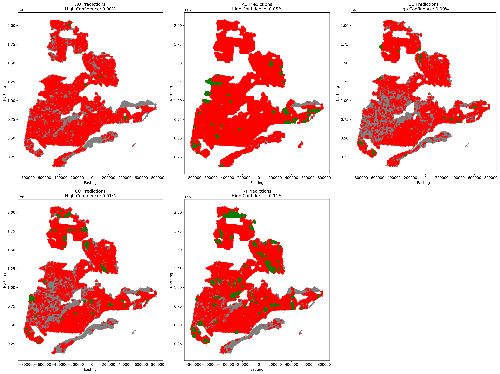
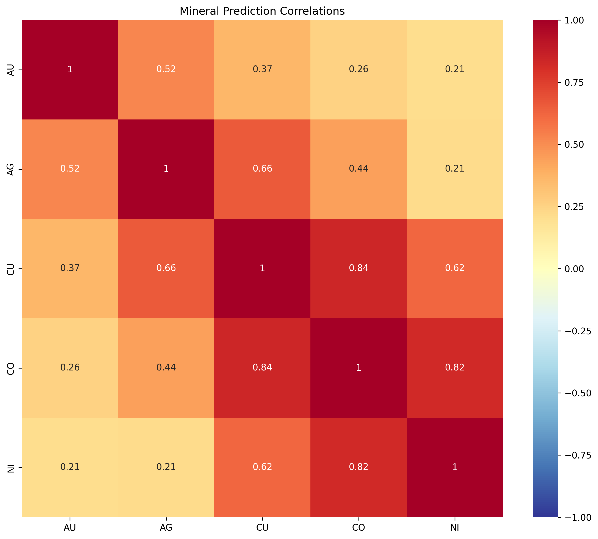
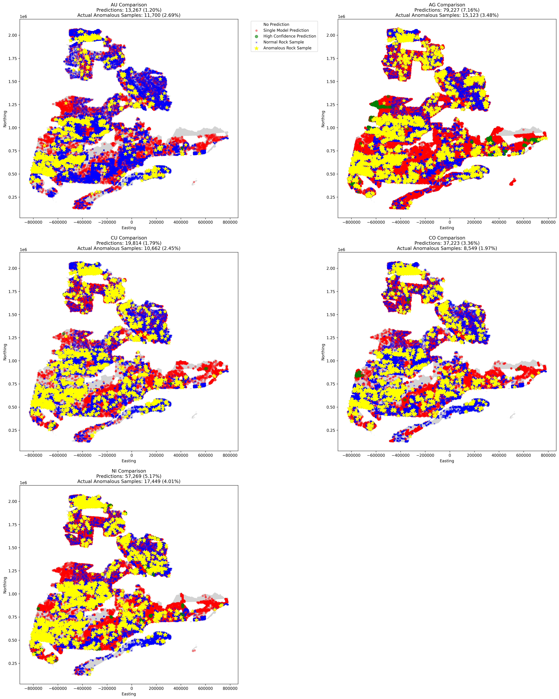

Quebec Mineral Potential Prediction: A Multi-Modal Deep Learning Approach
Original Upload: 2025-01-27
Last Updated:
Open Source Project
This project is fully open source and available on GitHub. You can find the complete source code, data, and documentation at:
https://github.com/RamiHaider/Quebec-Mineral-Prediction
The repository includes all necessary code, notebooks, and data preprocessing scripts. Feel free to clone, fork, or contribute to the project!
Project Overview
As a geologist who has traversed land claims across Ontario in search of gold, I've combined my field experience with my enthusiasm for machine learning to create a mineral prospectivity mapper. This project aims to build a multi-modal deep learning model to predict mineral potential across Quebec, combining geochemical data, geological features, and magnetic imagery to predict probabilities of anomalous values for Au, Ag, Cu, Co, and Ni.
My goal was to develop an interactive GUI that allows users to select a region of reasonable size (approximately 5km × 5km) and receive prediction results broken down by these five key minerals.
Project Structure
PROJECT_ROOT/
├── mag_images/ # 434,864 magnetic images (170x170 pixels, ~12KB each)
│ └── [1-434864].jpg
└── Training/
├── data/
│ └── raw/
│ └── rock_samples.csv # 459,550 rows, 99.8MB
├── models/
└── notebooks/
└── 01_data_exploration.ipynb
Hardware Constraints
The entire project was developed on a MacBook M2 with 8GB RAM and approximately 10GB of free storage. MPS support was available for GPU acceleration, which proved crucial for training the CNN models within memory limitations.
Data Collection & Preprocessing
Data Sources
I collected data from Quebec's public geoscientific database (SIGEOM):
- Geological Data:
- Downloaded shape files from `GEOL_SIGEOM_QC.SHP`
- Selected specific layers:
- Faille Regionale (Regional Faults)
- Contact geologique (Geological Contacts)
- Zone Geologique (Geological Zones)
- Geochemical Data:
- From `GEOCH_SIGEOM_QC.SHP`, I extracted rock sample data
- Geophysical Data:
- High-resolution magnetic survey data from:
- `Quebec_MAG_Dv1_TIFF`
- `Quebec_MAG_TIFF`
- Selected DV1 variant due to better information content and computational constraints
- High-resolution magnetic survey data from:
QGIS Preprocessing Pipeline
Initial Setup
- Data Loading:
- Loaded all shape files into QGIS
- Verified data integrity and extents
- Created a project file to maintain layer organization
- Set up layer styling for better visualization
- Coordinate System Transformation:
- Original data was in WGS84 (degrees), which isn't suitable for distance calculations
- Transformed all layers to EPSG:32918 (Quebec Lambert Conformal Conic)
- This projection is specifically optimized for Quebec and provides measurements in meters
- Verified transformation accuracy using control points
Data Cleaning and Preparation
- Attribute Cleaning:
- Removed unnecessary columns to reduce data size
- Standardized field names and data types
- Handled missing values and outliers
- Created consistent attribute tables across all layers
- Geometry Processing:
- Fixed topology errors in geological boundaries
- Simplified complex geometries for better performance
- Ensured consistent geometry types across layers
- Validated spatial relationships between layers
Masking Operations
- Geophysical Coverage Masking:
- Created a polygon layer representing the geophysical data coverage area (approximately 70% of Quebec)
- Used this as a mask to limit analysis to regions with complete data
- Applied this mask to:
- Rock sample points
- Geological zones
- Fault networks
- Geological contacts
- Generated a clean boundary for the study area
- Buffer Analysis:
- Created distance buffers around faults and contacts
- Generated proximity zones for geological features
- Calculated intersection areas between different geological units
- Created composite masks for specific mineral associations
Feature Extraction
- Distance Calculations:
- Calculated distance to nearest fault using Field Calculator
- Generated distance to geological contacts
- Created distance matrices for key geological features
- Optimized distance calculations using spatial indexes
- Geological Attribute Extraction:
- Performed spatial intersection to add geological information
- Extracted lithological and stratigraphic attributes
- Created composite geological indicators
- Generated geological complexity metrics
Grid Generation
- Prediction Grid Creation:
- Generated a regular grid of points at 1km spacing
- Set extent to cover Quebec province
- Applied coverage mask to grid points
- Added unique identifiers and coordinates
- Grid Processing:
- Calculated distances to faults and contacts
- Intersected with geological zones
- Added geological attributes
- Generated final feature set for prediction
Data Export
- Output Preparation:
- Created output folder structure
- Exported processed samples to CSV
- Generated grid point data
- Created metadata documentation
- Quality Control:
- Verified data completeness
- Checked attribute consistency
- Validated spatial relationships
- Generated summary statistics
Magnetic Image Generation
The next critical step was to generate magnetic imagery for both rock samples and grid points. This process proved more challenging than anticipated due to memory and I/O constraints.
Initial Approach
I created a Python environment for this task:
python3 -m venv env source env/bin/activate pip install numpy pandas tqdm rasterio
Performance Analysis
I conducted an in-depth analysis that revealed:
- Rock Samples:
- Clustering coefficient: 6.25
- Maximum samples per cell: 12,099
- Strong spatial clustering due to geological exploration patterns
- Grid Points:
- Clustering coefficient: 0.26
- Maximum samples per cell: 146
- Evenly distributed with minimal spatial locality
Optimized Solution
To address these challenges, I implemented:
# Extract window in source projection (WGS84)
src_window = rasterio.windows.from_bounds(
min_lon, min_lat, max_lon, max_lat, src.transform
)
# Read data in original projection
data = src.read(window=src_window)
def process_spatial_chunk(points_df, chunk_size=50000):
# Group points into 50km × 50km chunks
points_df['chunk_x'] = (points_df['Easting'] // chunk_size) * chunk_size
points_df['chunk_y'] = (points_df['Northing'] // chunk_size) * chunk_size
# Process each chunk sequentially
for (chunk_x, chunk_y), chunk_df in points_df.groupby(['chunk_x', 'chunk_y']):
# Process all points in this spatial chunk
process_points_in_chunk(chunk_df, chunk_x, chunk_y, chunk_size)
Model Architecture
The heart of this project is the multi-modal approach combining two model types:
Convolutional Neural Network (CNN)
For processing the magnetic imagery, I designed a specialized CNN architecture after extensive experimentation:
def build_cnn_model(input_shape=(170, 170, 3), num_classes=5):
# Input layer
inputs = Input(shape=input_shape)
# First convolutional block
x = Conv2D(32, (3, 3), padding='same', activation='relu')(inputs)
x = BatchNormalization()(x)
x = MaxPooling2D((2, 2))(x)
# Second convolutional block
x = Conv2D(64, (3, 3), padding='same', activation='relu')(x)
x = BatchNormalization()(x)
x = MaxPooling2D((2, 2))(x)
# Third convolutional block
x = Conv2D(128, (3, 3), padding='same', activation='relu')(x)
x = BatchNormalization()(x)
x = MaxPooling2D((2, 2))(x)
# Flatten and fully connected layers
x = Flatten()(x)
x = Dense(512, activation='relu')(x)
x = Dropout(0.3)(x)
x = Dense(256, activation='relu')(x)
x = Dropout(0.2)(x)
# Output layer - multi-target prediction
outputs = Dense(num_classes, activation='sigmoid')(x)
# Build model
model = Model(inputs=inputs, outputs=outputs)
return model
Gradient Boosted Trees (GBT)
For the tabular geological data, I implemented a series of Gradient Boosted Tree models using scikit-learn:
def train_gbt_models(X_train, y_train, features):
"""Train separate GBT models for each target mineral"""
models = {}
for mineral in ['AU', 'AG', 'CU', 'CO', 'NI']:
print(f"Training GBT model for {mineral}...")
# Initialize GradientBoostingClassifier with optimized hyperparameters
model = GradientBoostingClassifier(
n_estimators=100,
learning_rate=0.1,
max_depth=3,
subsample=0.8,
random_state=42
)
# Train model
target_col = f'{mineral}_target'
model.fit(X_train[features], y_train[target_col])
# Store model
models[mineral] = model
# Evaluate on training data
y_pred = model.predict_proba(X_train[features])[:, 1]
auc_score = roc_auc_score(y_train[target_col], y_pred)
print(f" Training AUC: {auc_score:.4f}")
return models
Performance Results
After just one epoch, the CNN model achieved impressive results:
Training Loss: 0.4294 Validation Loss: 0.3686 Prediction Summary: AU: Predicted positive: 6299.0 Actually positive: 2324.0 AUC Score: 0.8118 AG: Predicted positive: 6397.0 Actually positive: 3041.0 AUC Score: 0.7052 CU: Predicted positive: 2889.0 Actually positive: 2163.0 AUC Score: 0.6871 CO: Predicted positive: 3212.0 Actually positive: 1663.0 AUC Score: 0.7736 NI: Predicted positive: 4841.0 Actually positive: 3426.0 AUC Score: 0.8039
Detailed Evaluation Metrics (CNN Model)
A comprehensive evaluation of each mineral prediction model revealed:
- AU (Gold):
- Precision: 0.3458 (Configuration: Medium_Balanced)
- Recall: 0.3289
- F1-Score: 0.3371
- AG (Silver):
- Precision: 0.3590 (Configuration: Medium_SmallGeo)
- Recall: 0.0956
- F1-Score: 0.1511
- CU (Copper):
- Precision: 0.3548 (Configuration: Medium_DeepGeo)
- Recall: 0.0591
- F1-Score: 0.1015
- CO (Cobalt):
- Precision: 0.7600 (Configuration: Medium_LowDropout)
- Recall: 0.1301
- F1-Score: 0.2219
- NI (Nickel):
- Precision: 0.4570 (Configuration: Medium_LowDropout)
- Recall: 0.3382
- F1-Score: 0.3894
Visualization Results




Web Application Implementation
The final step was to create an interactive web application to make these predictions accessible to users.
Database Design
I designed a Supabase database with PostGIS extension for spatial data:
-- Enable PostGIS extension for spatial queries
CREATE EXTENSION IF NOT EXISTS postgis;
-- Create mineral samples table
CREATE TABLE mineral_samples (
id SERIAL PRIMARY KEY,
location GEOMETRY(POINT, 4326),
sample_date TIMESTAMP,
au_pred INTEGER,
au_prob FLOAT,
ag_pred INTEGER,
ag_prob FLOAT,
cu_pred INTEGER,
cu_prob FLOAT,
co_pred INTEGER,
co_prob FLOAT,
ni_pred INTEGER,
ni_prob FLOAT
);
-- Create spatial index
CREATE INDEX samples_location_idx ON mineral_samples USING GIST (location);
Frontend Implementation
The frontend was built using vanilla JavaScript with Leaflet.js for mapping capabilities:
class QuebecMap {
constructor(mapId) {
// Initialize Supabase client first
this.supabase = supabase.createClient(
'https://cnbpmepdmtpgrbllufcb.supabase.co',
'eyJhbGciOiJIUzI1NiIsInR5cCI6IkpXVCJ9...'
);
this.initializeMap(mapId);
this.setupEventListeners();
this.initializeLayers();
}
initializeMap(mapId) {
this.map = L.map(mapId, {
center: [52, -68],
zoom: 5,
minZoom: 3,
maxZoom: 12
});
// Add base layers
this.baseLayers = {
'OpenStreetMap': L.tileLayer('https://{s}.tile.openstreetmap.org/{z}/{x}/{y}.png'),
'Satellite': L.tileLayer('https://server.arcgisonline.com/ArcGIS/rest/services/World_Imagery/MapServer/tile/{z}/{y}/{x}')
};
this.baseLayers['OpenStreetMap'].addTo(this.map);
// Add layer control
L.control.layers(this.baseLayers).addTo(this.map);
}
}